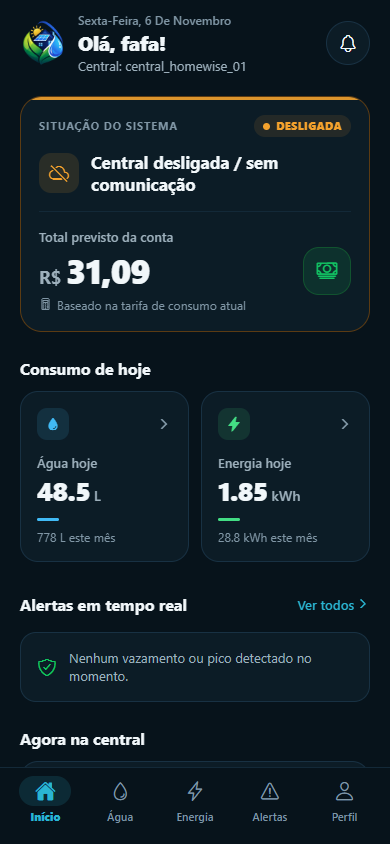
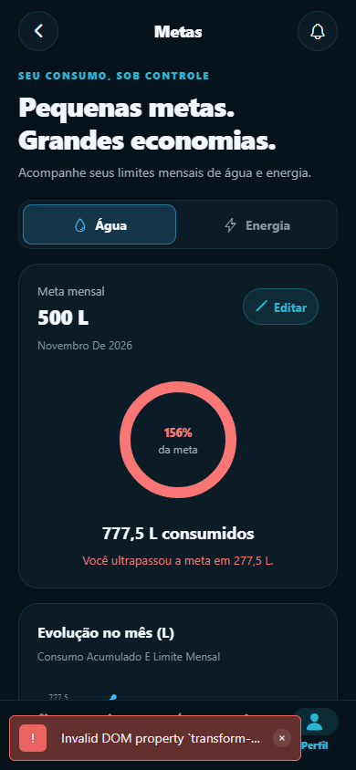
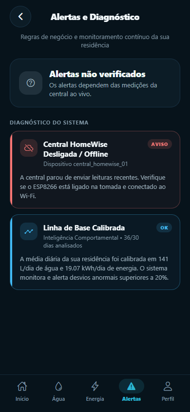

Monitoramento de água
O sensor de vazão acompanha a água que entra na casa e mostra o consumo do dia e do mês em litros.
YF-S201 · litrosO HomeWise conecta sensores de água e energia a um aplicativo que acompanha o consumo em tempo real, avisa quando algo sai do normal e ajuda a cumprir metas de economia.

sensores dedicados: vazão de água (YF-S201) e energia elétrica (PZEM-004T).
de leituras para o app calibrar a linha de base de consumo da sua casa.
de desvio em relação à linha de base já é sinalizado como consumo anormal.
áreas no aplicativo: Início, Água, Energia, Alertas e Perfil.
Do sensor ao gráfico: o HomeWise transforma leituras em decisões simples.
O sensor de vazão acompanha a água que entra na casa e mostra o consumo do dia e do mês em litros.
YF-S201 · litrosO medidor registra potência instantânea, tensão da rede e o consumo acumulado em kWh.
PZEM-004T · kWhDefina limites mensais de água e energia e veja quanto da meta já foi usado.
Consulte o consumo por dia, semana, mês e ano para entender seus hábitos.
Barras por período e evolução da meta deixam claro quando o consumo subiu.
Avisos de possível vazamento, picos de consumo e central desligada ou sem comunicação.
Vazamento · pico · central offlineDepois de 30 dias de leituras, o app aprende a média da sua casa e passa a sinalizar desvios acima de 20%.
Linha de base calibradaEscolha uma área para ver a tela correspondente do aplicativo.


Capturas reais do aplicativo HomeWise.
Vazão de água e grandezas elétricas são lidas nos pontos de consumo.
A central HomeWise agrupa as leituras e as envia pela rede Wi-Fi.
Os dados ficam vinculados à sua conta, com acesso por login.
Gráficos, metas e alertas mostram onde é possível economizar.